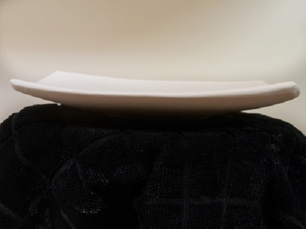

This tutorial will demonstrate a beginning to intermediate level technique for handbuilding plates from a slab.
Suggested Materials and tools:
Throw or roll your slab to be about a quarter of an inch or a bit thicker. Use your serrated rib and smooth rib to compress the clay, and add or remove any texture you want to see on the top surface of your plate. I opt for smooth because my decorating process involves applying slip and carving, but you might choose to leave some texture depending on your decorating style.
Back to Top
Apply your slab to the mold. Make sure to spend some time compressing the slab to the mold with a rib. Use your cutting tool to cut the plate into whatever shape you want! I've been using this irregular rectangle shape lately, but I've done round, hexagonal, triangular, and more. Just remember that your plate will shrink in both the bisque firing and the glaze firing, so take your desired size into consideration when cutting the plate's shape.
Back to Top
Add clay in whatever way you'd like to create a foot for your plate. You can get creative here! I like to go for an elegant line into my foot, so I add a chunk of clay that I then refine with the rib tool.
Back to Top
I like to refine in a few phases.
When working in this way, there are some things to consider:
| Pros | Cons | |
|---|---|---|
| Trimming and shaping while the clay is still wet allows you to get the shape you want | Working while the clay is this wet requires a bit more finnese, it's easy to accidentally over-do it | |
| Trimming and shaping while clay is wet gives more compression in the early stages | Can be hard to have the same control as you do when trimming at the leatherhard stage | |
| Refining during the bone-hard phase gives a better sense of the form | Bone-dry clay is extremely delicate, and it's very easy to break | |
| I think refining in the bone-hard phase gives me a cleaner look in the end | This method wears tools down very quickly, and it's very dusty! |
Decorating is totally up to you and your style. Plates offer a beautiful, simple surface with lots of opportunities that a smaller, curved, or more complicated vessels often do not. Have fun!
Back to Top